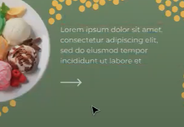
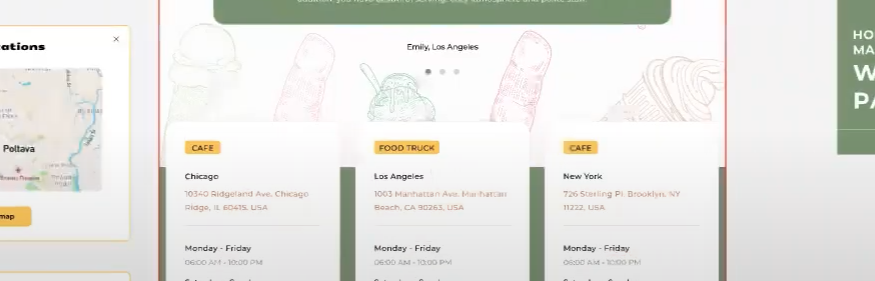
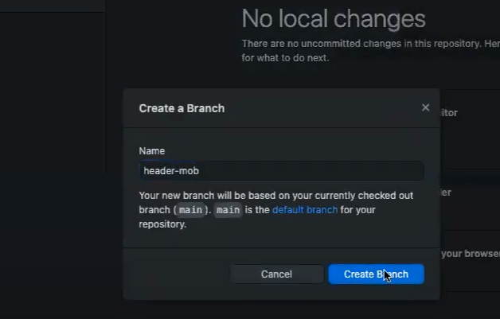
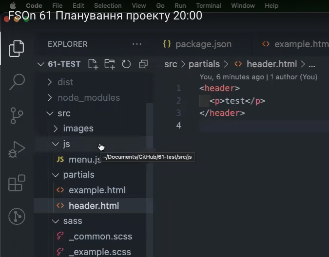

Проєкт
FSOn 61 Планування проекту 20:00
Модуль 8 - Занятие 16 - Адаптивная графика ... і т д
Погнали:
Оце все робимо гумовим:
Картинки абсолютно зверху - їх при бажанні можна анімувати.
Біленьке - то тінь
Навіть не тінь = а фільтр = блур
Ментор радить почитати, що таке ЦСС фільтр
Тут геп або флекс бейзіс. Від чайлдів відходимо і від Спейс бітвін також (геп рулить):

Ось це - псевдоелементи:
Ось це - заголовки (хто не знав))) ):

Стрілки будуть кнопками:
Для відео ментор рекомендує айфрейм:
Корова - абсолютно зпоціонована:
У цієї секції немає видимого заголовка::
Щодо різних відступів...
Ментор задасть питання дизайнеру
Різні робити - немає сенсу
Ось це - це ПеЕнГешки::

Ось це основний слайдер:
А ось тут можна додати "тіпа слайдер" = фільтр...
... Ось ці дві секції можно огорнути в дів... або репітом (він сам не знає))) :
Йдеться про ці маркери:
Ось ці лінії...
... робляться за допомогою:
Чому не бордер? Щоб не було проблем з розтягуванням сторінки:
Та сама фігня - ставимо і сховуємо:

Ось вони:
Це просто параграфи:
Вони повинні бути клікабельні (все, як в домашках))) ):
Модалки є:
Як додати карту:
Запитання в таблиці:
Перший - не зрозуміло = щось під нос буркнув,
другий = ховер-фокус, третій = я з третього разу почув
= типудісейбл... ТИПУДІСЕЙБЛ? типудісейбл! )))
Я в шоці!
Бук бундючивсь перед дубом,
Тряс над дубом бурим чубом.
Дуб пригнув до чуба бука —
Буде букові наука.
Тім лід підключає секції:
імпортує... вся фігня (як в домашці):

Раніше ми запускали через ГоЛів. Зараз через термінал...
Як я зрозумів ця строка за замовучуваннмя - потім дещо руцями
Пишемо команду ЕнПіЕм Ай = трошки по іншо му, ніж у Репети:
Наша збірка називається парсель - тому такі гойдалки ))))
Наступна команда ЕнПіЕм СТАРТ = це запуск лайв-сервера:
Після цього з'являється посилання:
Учасник команди також так робить - я кщо зелененьке = все ок
Перед пушом потрібно створити гілку:

Пул реквест - це коментар
До діалогу можна ще когось приєднати - праворуч шостиренка:
Коли тім-лід прийняв зміни, ми заходимо в себе на гітхаб = на мейн...
Натискаємо Фетч
І пул = щоб працювати вже над проєктом з власними змінами:
Видаляємо попередню гілку і створюємо нову
Потім вказуємо команду Гіт Пул Оріджін Мейн + ентер
І потім працємо в своєму Паршелі:
хтмл крапка слеш + цсс крапка крапка слеш = шлях до зображень = порада від ментора
збірка працюватиме некоректно, якщо ЕсЕрСі (і чреви та есвегешки) незаповнені
Ось таку помилку видасть:
типу все